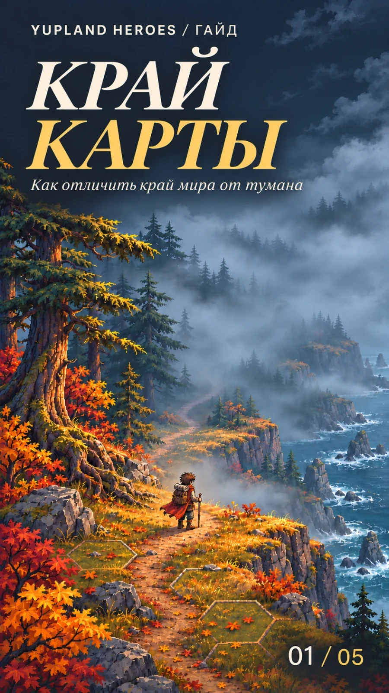
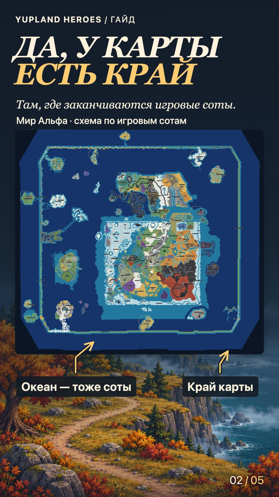
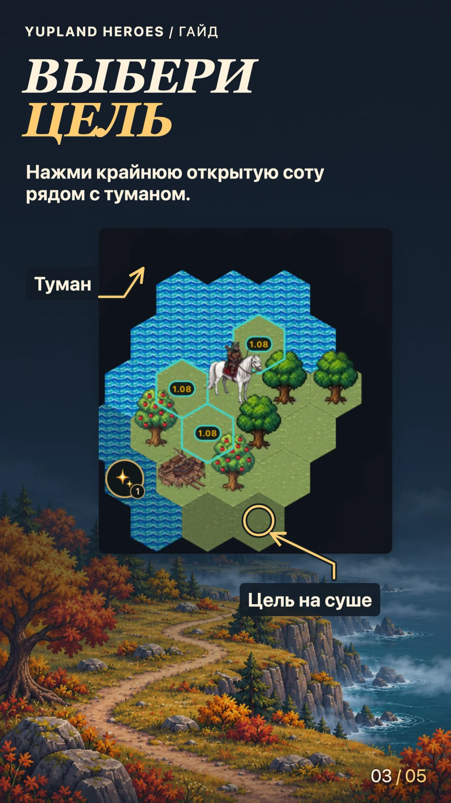
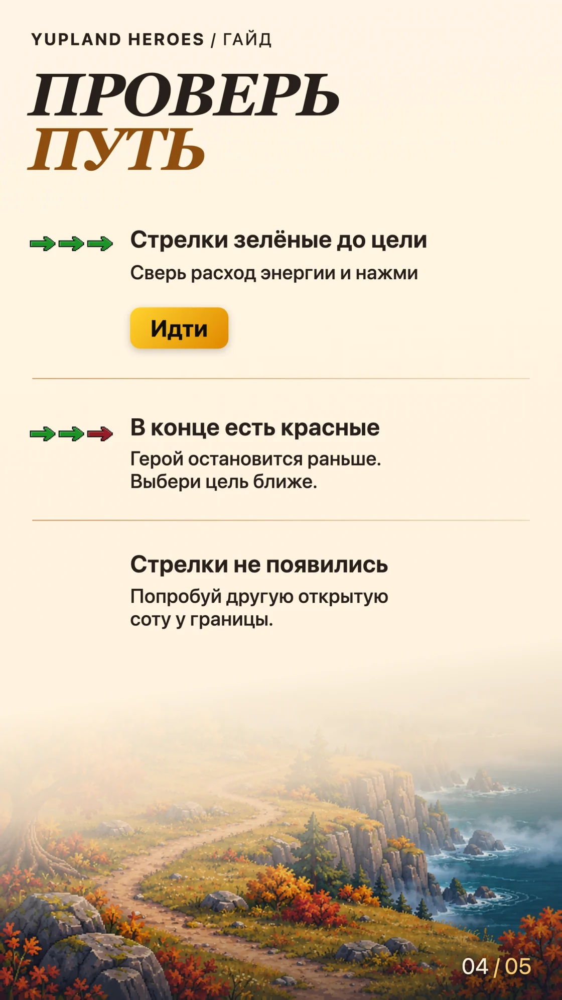
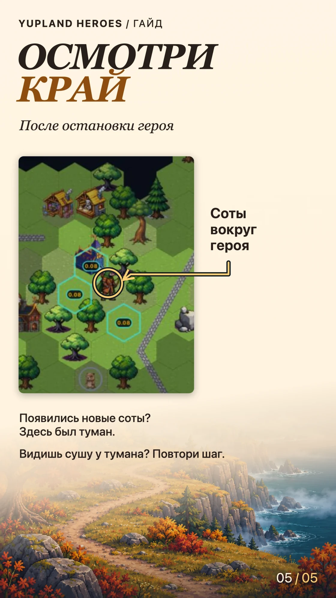

Край карты. Как отличить край мира от тумана
-
Обложка 
-
Шаг 01 · Схема мира Альфа 
-
Шаг 02 
-
Шаг 03 
-
Шаг 04 
Есть ли у карты край?
Да. Край карты там, где заканчиваются игровые соты. На схеме мира Альфа он проходит за океаном. Берег — переход с суши на воду, а вода тоже занимает соты. За внешней границей мира сот уже нет, поэтому проложить туда путь нельзя.
Тёмная область на твоём экране сама по себе не показывает, где кончается мир. Это может быть туман разведки. Проверить его можно, подойдя героем к видимой границе.
Выбери доступную цель на суше
Верни обзор к герою, если ты отводила камеру. Найди открытую сушу у тёмных сот. На игровом снимке подход отмечен кольцом. Коснись такой соты на основной карте. На острове новичка игра может предложить путь и в туман, а видимый подход помогает заранее оценить дорогу.
Проверь маршрут
- Зелёные стрелки до цели. Сверь расход рядом с числом шагов и нажми «Идти».
- В конце есть красные. Герой остановится на последней зелёной стрелке. Для короткой разведки выбери цель ближе.
- Стрелок нет. Попробуй другую открытую соту. Вода и препятствия могут перекрывать подход, поэтому отсутствие маршрута само по себе не подтверждает край мира.
Осмотри край после остановки
Появились новые соты — перед тобой был туман разведки. Если дальше есть открытая суша, выбери следующую соту у тумана. Если видишь воду, проследи берег и найди проход по суше.